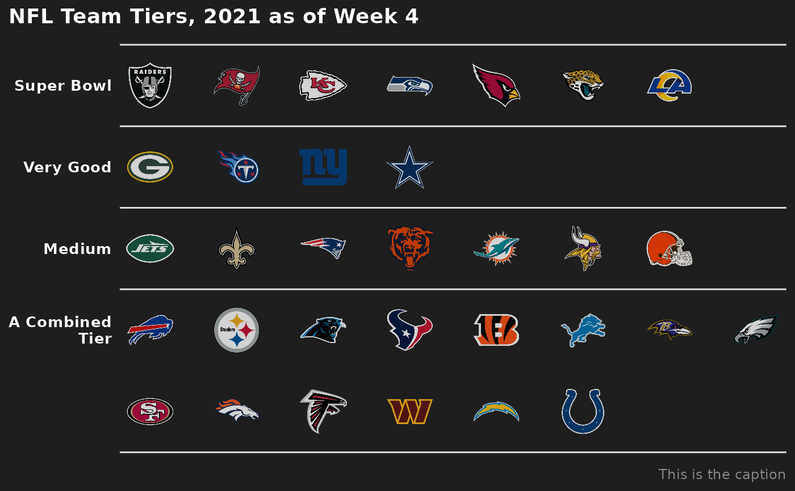
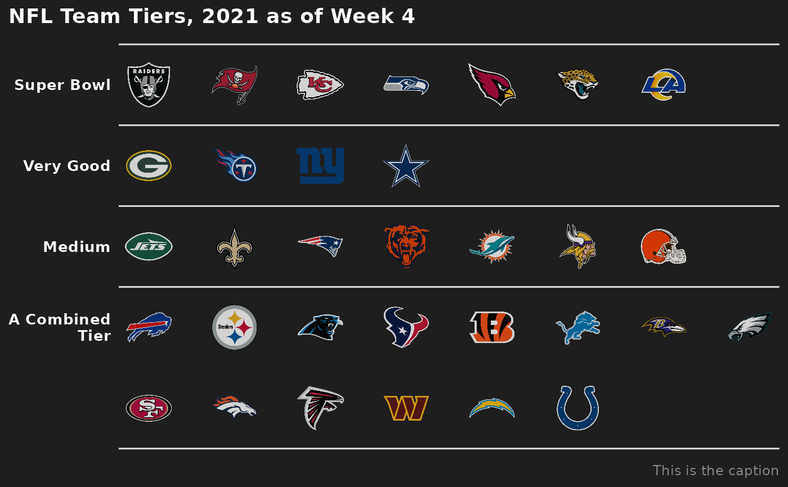

This function sets up a ggplot to visualize NFL team tiers.
nfl_team_tiers(
data,
title = "NFL Team Tiers, 2021 as of Week 4",
subtitle = "created with the #nflplotR Tiermaker",
caption = NULL,
tier_desc = c(`1` = "Super Bowl", `2` = "Very Good", `3` = "Medium", `4` = "Bad", `5`
= "What are they doing?", `6` = "", `7` = ""),
presort = FALSE,
alpha = 0.8,
width = 0.075,
no_line_below_tier = NULL,
devel = FALSE
)Arguments
- data
A data frame that has to include the variables
tier_no(the number of the tier starting from the top tier no. 1) andteam_abbr(the team abbreviation).team_abbrshould be one ofvalid_team_names()and the function tries to clean team names internally by callingnflreadr::clean_team_abbrs(). If data includes the variabletier_rank, these ranks will be used within each tier. Otherwise, ifpresort = FALSE, the function will assume that data is already sorted and ifpresort = TRUE, teams will be sorted alphabetically within tiers.- title
The title of the plot. If
NULL, it will be omitted.- subtitle
The subtitle of the plot. If
NULL, it will be omitted.- caption
The caption of the plot. If
NULL, it will be omitted.- tier_desc
A named vector consisting of the tier descriptions. The names must equal the tier numbers from
tier_no- presort
If
FALSE(the default) the function assumes that the teams are already sorted within the tiers. Will otherwise sort alphabetically.- alpha
The alpha channel of the logos, i.e. transparency level, as a numerical value between 0 and 1.
- width
The desired width of the logo in
npc(Normalised Parent Coordinates).- no_line_below_tier
Vector of tier numbers. The function won't draw tier separation lines below these tiers. This is intended to be used for tiers that shall be combined (see examples).
- devel
Determines if logos shall be rendered. If
FALSE(the default), logos will be rendered on each run. IfTRUEthe team abbreviations will be plotted instead of the logos. This is much faster and helps with the plot development.
Examples
# \donttest{
library(ggplot2)
library(dplyr, warn.conflicts = FALSE)
team_abbr <- valid_team_names()
# remove conference logos from this example
team_abbr <- team_abbr[!team_abbr %in% c("AFC", "NFC")]
# Build the team tiers data frame
# This is completely random!
df <- data.frame(
tier_no = sample(1:5, length(team_abbr), replace = TRUE),
team_abbr = team_abbr
) %>%
dplyr::group_by(tier_no) %>%
dplyr::mutate(tier_rank = sample(1:n(), n()))
# Plot team tiers
nfl_team_tiers(df)
 # Create a combined tier which is useful for tiers with lots of teams that
# should be split up in two or more rows. This is done by setting an empty
# string for the tier 5 description and removing the tier separation line
# below tier number 4.
# This example also shows how to turn off the subtitle and add a caption
nfl_team_tiers(df,
subtitle = NULL,
caption = "This is the caption",
tier_desc = c("1" = "Super Bowl",
"2" = "Very Good",
"3" = "Medium",
"4" = "A Combined Tier",
"5" = ""),
no_line_below_tier = 4)

# For the development of the tiers, it can be useful to turn off logo image
# rendering as this can take quite a long time. By setting `devel = TRUE`, the
# logo images are replaced by team abbreviations which is much faster
nfl_team_tiers(df,
tier_desc = c("1" = "Super Bowl",
"2" = "Very Good",
"3" = "",
"4" = "A Combined Tier",
"5" = ""),
no_line_below_tier = c(2, 4),
devel = TRUE)
# Create a combined tier which is useful for tiers with lots of teams that
# should be split up in two or more rows. This is done by setting an empty
# string for the tier 5 description and removing the tier separation line
# below tier number 4.
# This example also shows how to turn off the subtitle and add a caption
nfl_team_tiers(df,
subtitle = NULL,
caption = "This is the caption",
tier_desc = c("1" = "Super Bowl",
"2" = "Very Good",
"3" = "Medium",
"4" = "A Combined Tier",
"5" = ""),
no_line_below_tier = 4)

# For the development of the tiers, it can be useful to turn off logo image
# rendering as this can take quite a long time. By setting `devel = TRUE`, the
# logo images are replaced by team abbreviations which is much faster
nfl_team_tiers(df,
tier_desc = c("1" = "Super Bowl",
"2" = "Very Good",
"3" = "",
"4" = "A Combined Tier",
"5" = ""),
no_line_below_tier = c(2, 4),
devel = TRUE)
 # }
# }